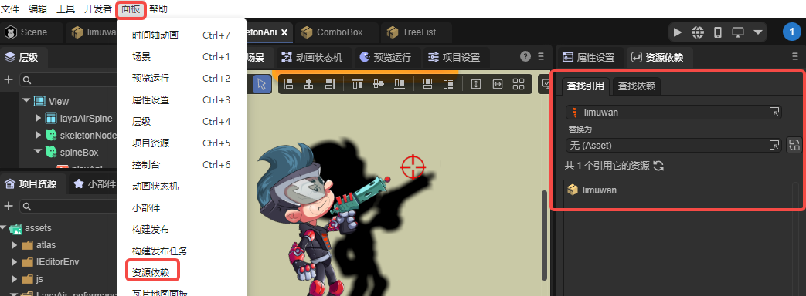
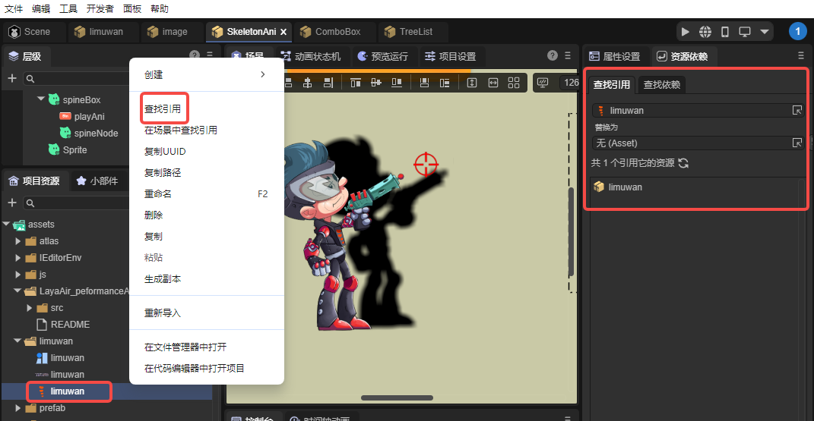
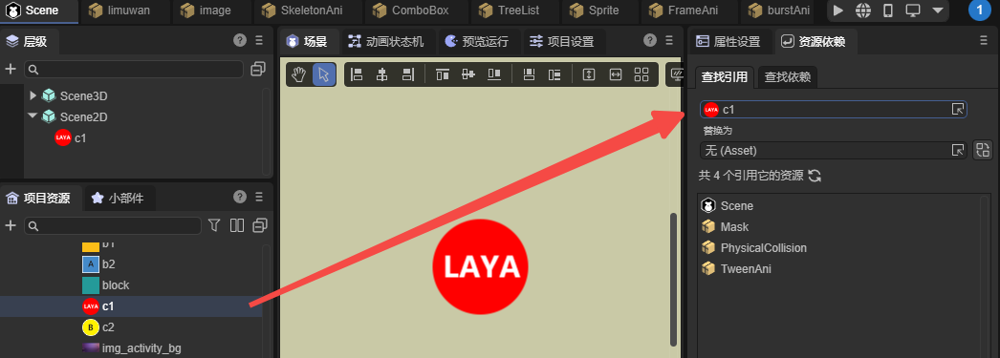
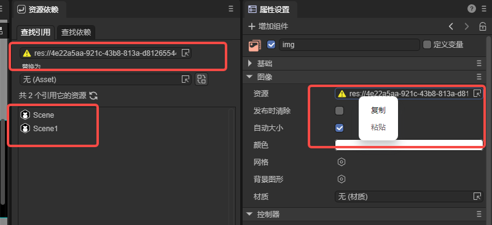
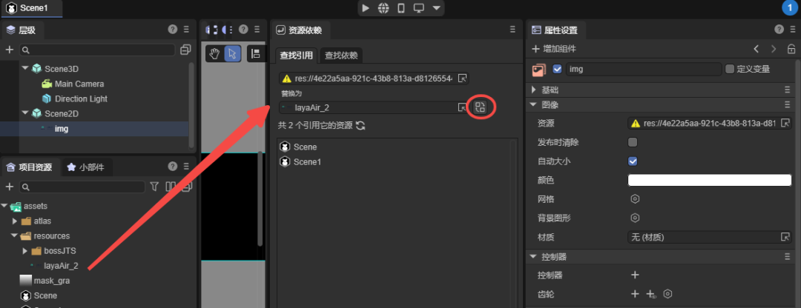
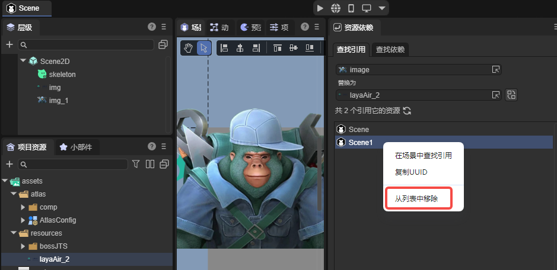
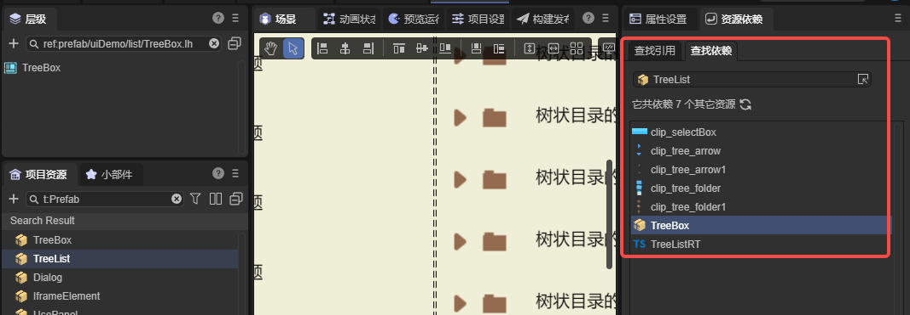
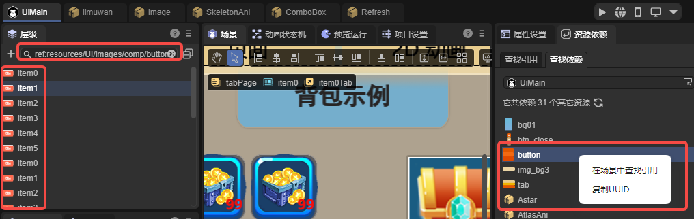

资源依赖面板
Author： Charley
资源依赖是 LayaAir3-IDE 在 3.3.4 版本中新增的内置插件工具，用于帮助开发者快速分析资源之间的引用关系。无论是排查丢失资源、清理工程、替换素材，还是进行批量资源管理，这个工具都能显著提升项目维护效率。
1、面板打开方式
资源依赖面板默认位于属性设置面板右侧。如果被关闭，可通过顶部菜单栏的 ”面板 → 资源依赖 ” 重新打开，如图 1-1 所示。

（图1-1）
也可以在项目资源面板中，对任意资源右键选择 “查找引用”，直接跳转到资源依赖面板，如图 1-2 所示。

(图1-2)
2、查找引用
2.1 查找资源被引用的情况
在项目中，资源引用关系通常非常复杂，一个贴图、动画或材质可能深藏在多个场景和预制体之中。不了解资源被谁使用，就无法安全地修改、替换或删除。
“查找引用” 功能能够快速生成一份清晰的引用清单，让你准确判断一个资源是否仍在使用、是否会被误删，以及是否需要统一替换。此功能对大型工程的维护尤为关键。
实际使用时，可在资源面板选中资源并右键 “查找引用”，或将资源拖放到引用输入框中，系统会立即列出所有引用该资源的场景、预制体和动画等，如图 2-1 所示。

（图2-1）
2.2 查找丢失的资源引用
“查找引用”不仅可用于分析现有资源，也能帮助定位已经丢失的资源。
例如，当某个资源被删除后，组件的资源属性可能只剩下 UUID。只需在属性输入框中右键复制 UUID，并粘贴到“查找引用”的输入框中，就能找出所有引用这个丢失资源的地方，如图 2-2 所示。

（图2-2）
2.3 批量替换资源
无论是替换丢失资源还是进行资源升级，“查找引用”中的替换功能都能快速完成操作。
我们只需要在“替换为”的资源输入框那里选择或拖入新的资源，再点击资源输入框右侧的替换按钮，如图2-3所示，即可批量替换结果列表中的全部引用。

（图2-3）
如果不希望某些引用参与替换，可以在列表中选中对应条目，右键选择 “从列表中移除”，即可将其排除在替换范围之外，如图 2-4 所示，使替换过程更安全、更灵活。

（图2-4）
3、查找依赖
3.1 查找依赖
资源依赖的另一个重要功能 “查找依赖” 则是从反方向分析资源的依赖链，帮助开发者快速了解资源构成。
例如，一个预制体依赖哪些贴图、材质、模型、脚本文件等。如图3-1所示。

（图3-1）
面板会以清单形式列出所有依赖项，有助于评估资源与贴图数量、脚本数量等，排查异常缺失或重复依赖问题。
3.2 场景中查找引用
有些时候，我们通过查找依赖，找到了场景的依赖的全部资源，但是，由于节点被重命名了，资源与节点的名称并不一致。当场景中有大量的节点与复杂的结构时，快速地找到某个资源对应的全部节点，并不容易。
此时可在依赖结果列表中，对资源条目右键选择“在场景中查找引用”，即可在当前打开的场景层级面板中，列出所有引用了该资源的节点。如图3-2所示。

（图3-2）
4、插件接口调用方式
除了 IDE 内置的操作方式，LayaAir3-IDE 的插件系统也提供了相应的 API，包括查询依赖（queryDependency）、查询引用（queryReference）和替换引用（replaceReference）。这些接口均位于核心类 IEditorEnv.AssetDependencyTool 中，方便开发者在自己的插件中使用相关功能。
示例代码如下：
let result = await IEditorEnv.AssetDependencyTool.queryReference([
"45897bb8-a4bd-4607-a70e-ba1a7546882f"
]);